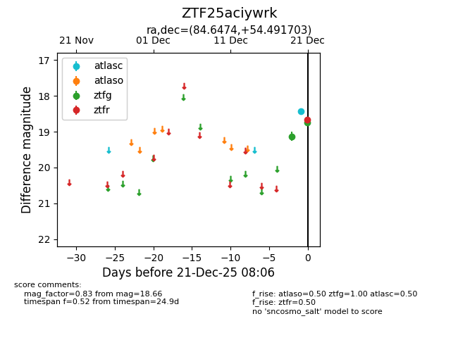
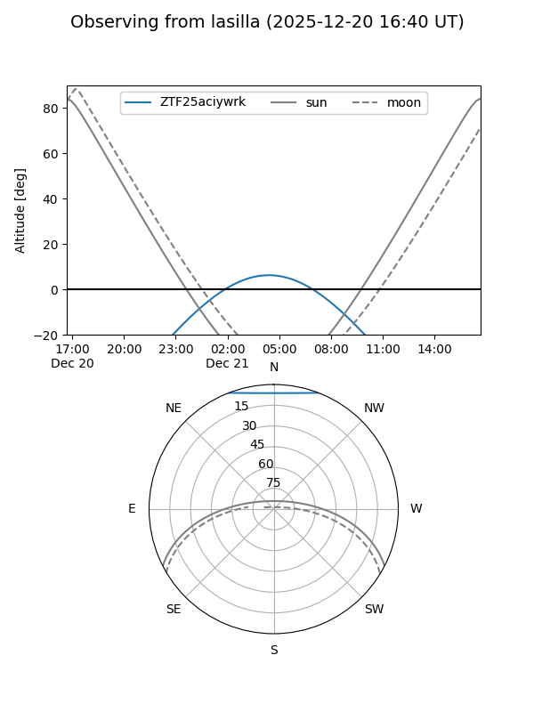
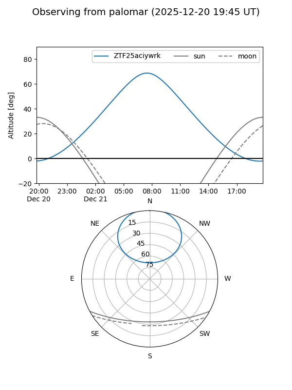

ZTF25aciywrk
Target ZTF25aciywrk at 2025-12-21 08:08
Aliases and brokers:
FINK: fink-portal.org/ZTF25aciywrk
Lasair: lasair-ztf.lsst.ac.uk/objects/ZTF25aciywrk
ALeRCE: alerce.online/object/ZTF25aciywrk
alt names
ZTF25aciywrk (ztf,fink_ztf)
Coordinates:
equatorial (ra, dec) = 84.6474,+54.49170
equatorial (HMS+DMS) = 05:38:35.37,+54:29:30.13
galactic (l, b) = (157.2830,+12.10056)
Flags:
likely cv
Photometry:
last atlasc=18.42, atlaso=nan, ztfg=18.75, ztfr=18.66
1 atlasc, 1 atlaso, 2 ztfg, 1 ztfr detections
Lightcurve

Visibility


Additional plots